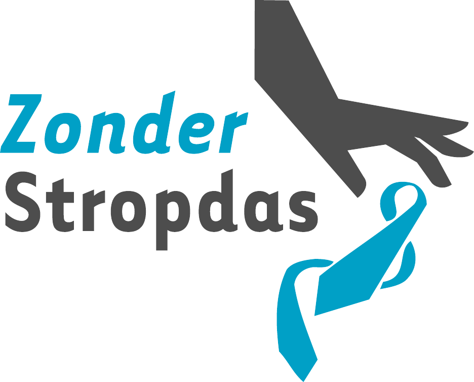
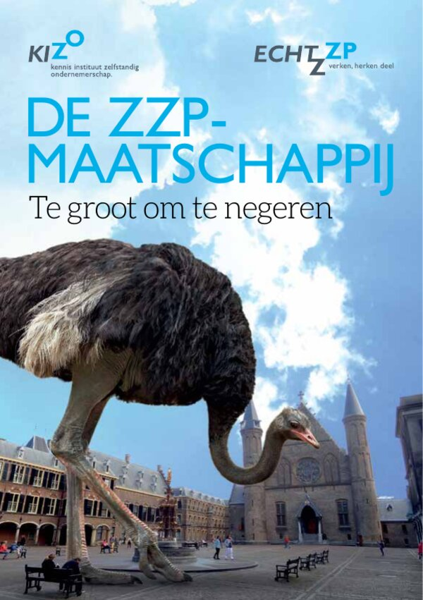
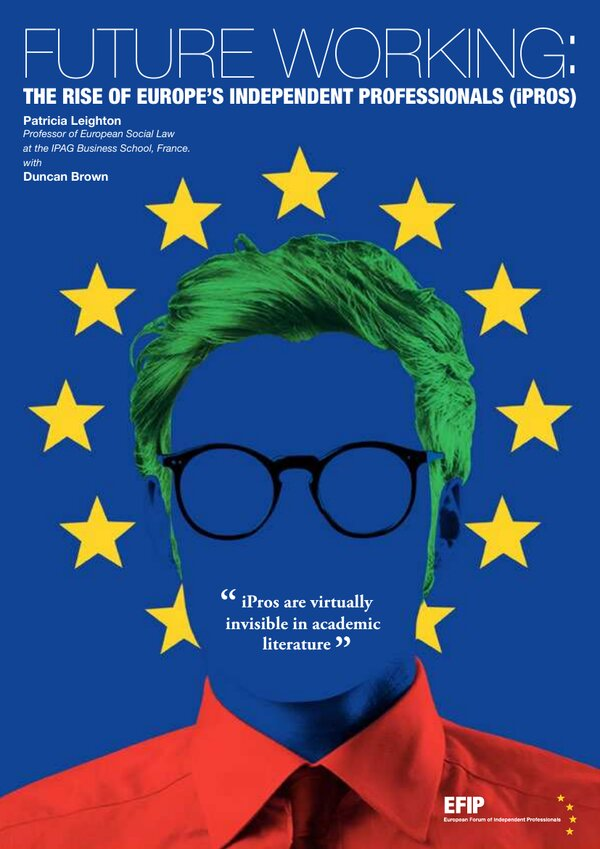
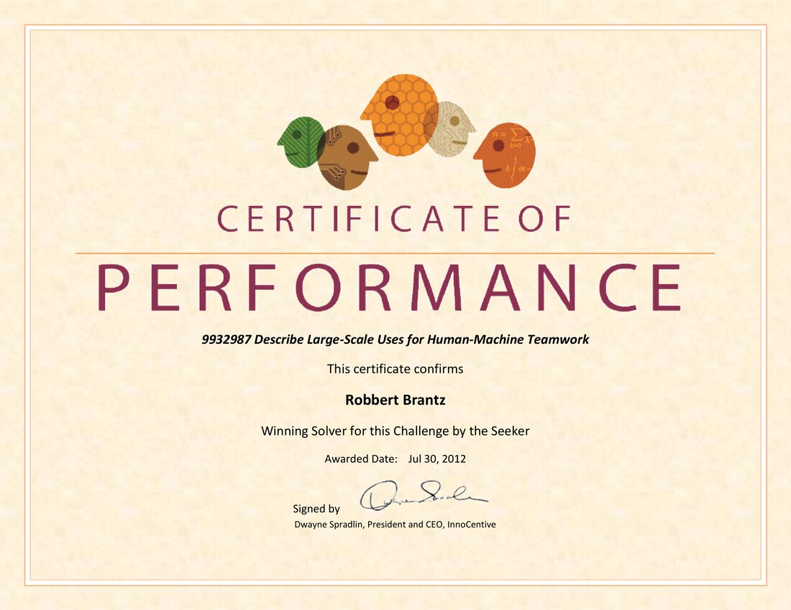
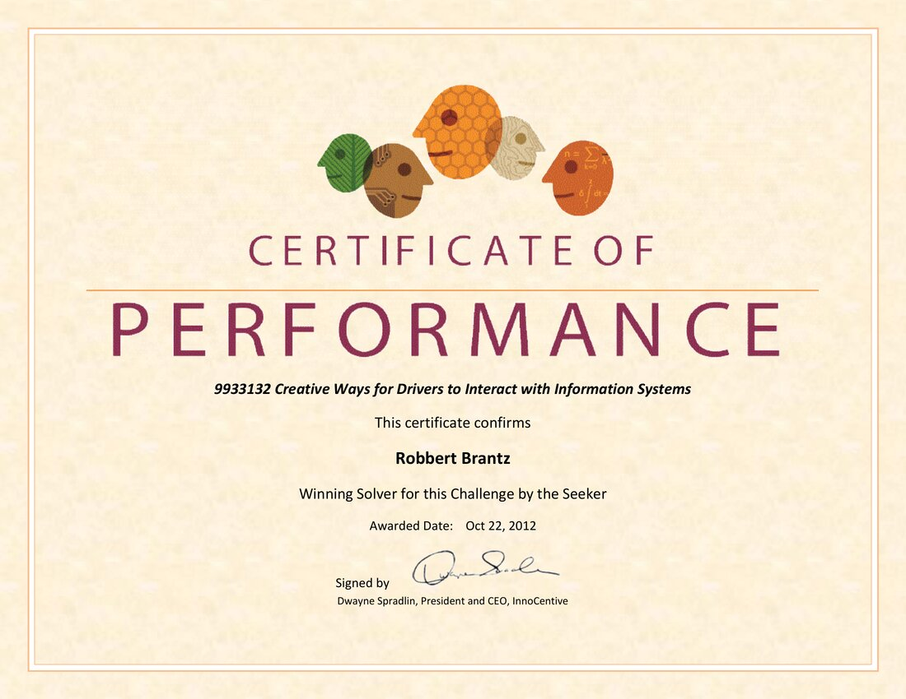
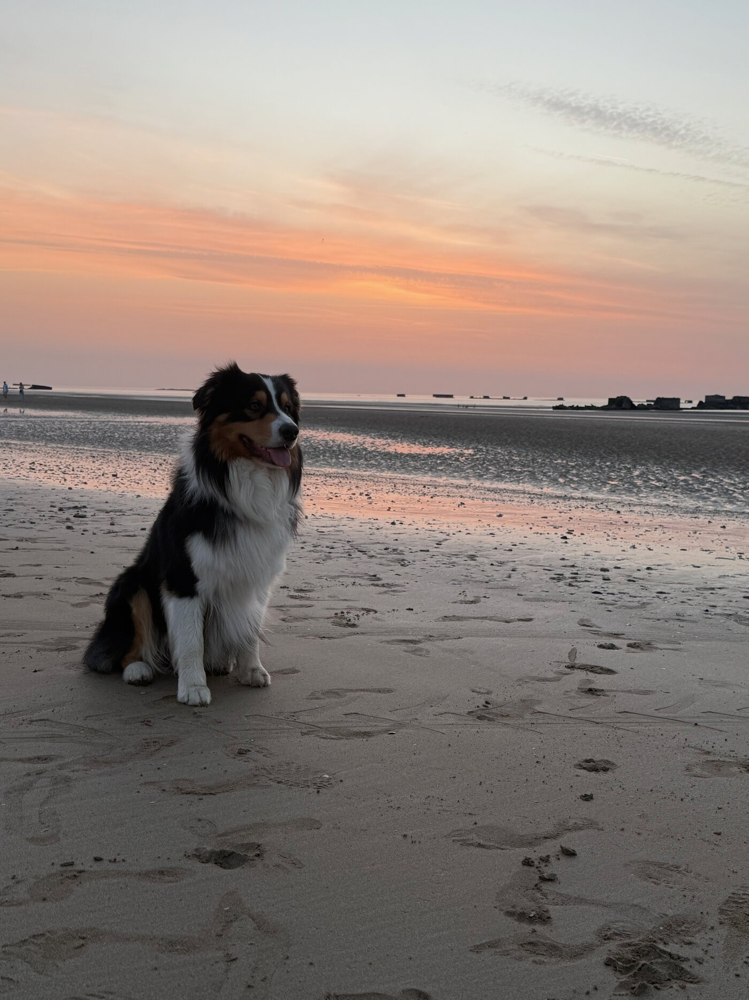

Dit is geen bedrijf en geen pitch. Het is een eerlijk verhaal — over wat lukte, wat mislukte, wat het leven onderweg deed, en over de ene constante in al die jaren: de mens in het proces. Waar het naartoe gaat weet ik zelf nog niet precies. Dat is geen zwakte, dat is het eerlijke antwoord.
Als kind nam ik computerspelletjes op via de radio. De code werd uitgezonden, ik zat klaar met mijn cassettebandje — om vervolgens in die code mezelf op nummer 1 van het spelletje te zetten.
Mijn ouders waren altijd trots op me, ook al begrepen ze niet precies wat ik deed. En het gekke was: schreef ik op school een lullig gedichtje, dan zat ik ineens tussen de regionale prijswinnaars. In mijn werk ging het later net zo — ik rolde van prijs naar prijs, niet omdat ik er mijn best voor deed. Het ging gewoon zo.
Op mijn vijftiende was ik het programmeren zat en ging ik gitaar spelen in een bandje — en nam ik al snel het voortouw in commissies en besturen. Op mijn achttiende ging ik weer programmeren. De twee sporen die mijn hele leven zouden blijven: de techniek en de mensen.
Ik was altijd aan het werk; de groentewinkel en de sportclub waren mijn sociale leven. Mijn eerste echte baan: formulieren invullen met de hand en met de typmachine, papiertjes die iedere dag werden opgehaald en later gecontroleerd als ze verwerkt waren. Ik bestelde eten via James, de allereerste telesuper, en kleren via een klein modem — in een tijd waarin The Police, Dire Straits en U2 nog optraden in sporthallen om de hoek.
ABN AMRO werd mijn leerschool. Daar zag ik van binnenuit hoe een grote organisatie werkt — en hoe de digitalisering golf na golf door de bank rolde. Daarna koos ik voor het ondernemerschap, en als zelfstandige werkte ik in de loop der jaren voor vrijwel alle grote financiële instellingen van Nederland. Altijd zonder stropdas, altijd op het snijvlak van proces, techniek en mens.
Toen versnelde de wereld. Er kwamen interfaces, het formuliertje hoefde niet meer getypt. Eigen websites met formulieren die in je mail vielen. Een cd-rom uit de winkel waarmee je een eigen webwinkel bouwde — en weer verbouwde naar je eigen propositie. De webwinkel ging praten met CRM-pakketten, er kwamen termen als SOAP en API. En ik leerde gewoon mee: van BASIC van het cassettebandje, via PHP voor het web en C++, naar de cloud — en nu Claude. Programmeren veranderde van regels tikken, in bouwstenen verbinden, in gewoon zeggen wat je bedoelt. En zo is er nu AI.
Wat vroeger miljoenen kostte aan projectontwikkeling — de mensen die je nodig had om iets te produceren — kan nu soms zelfs gratis. Ineens bouw je apps, heb je zelfschrijvende websites en pomp je in een uurtje een pophit uit je computer.
Terwijl de boom in de tuin nog steeds gesnoeid moet worden.
Ik heb banen zien verdwijnen en nieuwe zien ontstaan. Het belangrijkste wat ik leerde: hoe groot de onderneming ook is, er is altijd een harde kern in teams die het bedrijf en de cultuur vormgeeft. Die kern bepaalt of verandering lukt — niet de technologie. En wat veel mensen niet beseffen: het team is niet de manager. Het zijn de mensen zonder stropdas die al het uitvoerende werk doen.
Over de consultants die ik door de jaren heen ontmoette ben ik overigens positief — niet alleen de zzp'ers, ook de mensen van Accenture, McKinsey, KPMG en consorten. Dezelfde drive, hetzelfde oplossend vermogen. Alleen geldt voor hen wat ook voor de overheid geldt: ze dienen de strategische belangen, niet direct de menselijke. Al doen zij het dan nét iets liever.
Bij Kennisnet — de organisatie die scholen digitaal vooruit moest helpen — werkte ik aan mediawijsheid, toen dat woord nog niet eens een begrip was, en aan hoogbegaafdheid: onderwerpen die tot op de dag van vandaag kwetsbare plekken in de maatschappij zijn. En bovenal werkte ik er met een team van superacademici — slimme mensen, heel gaaf. Tegelijk zag ik van dichtbij: het onderwijs loopt mijlenver achter op de digitalisering. De leerlingen niet — die waren allang digitaal terwijl het systeem nog vergaderde over de vraag of dat wel mocht.
Eerst bij ABN AMRO, daarna als zelfstandige bij vrijwel alle grote instellingen van het land: ik zag de omslag van brute verkoop naar klantgericht werken van binnenuit. De omslag kwam er — maar het ging tergend langzaam. Systemen veranderen pas als het echt niet anders meer kan.
Dus kocht ik me in bij A&H Finance — niet om mee te draaien, maar om samen met het team van A&H dat systeem te verslaan. Wat begon als een advieskantoor in de regio Amsterdam groeide — gedreven door slimme IT — uit tot een landelijk werkend bedrijf. Hypotheken, erfpacht, en honderden huishoudens en ondernemers geholpen bij de grootste financiële beslissing van hun leven — van starters en gezinnen tot expats, door het hele land. En weet je wat het mooie was? De meesten konden het systeem heus wel ontcijferen. Ze wilden gewoon een goed gesprek en iemand die bereikbaar is. Fantastisch, al die individuele verhalen.
Het devies was simpel: de klant eerst, de rest volgt. En het werkte: in die jaren won A&H Finance vijf landelijke Independer Awards en groeide het uit tot een van de snelste groeiers in de financiële dienstverlening. Wie het wil nazoeken: het kantoor staat vandaag nog altijd op een 5.0 op Google, na honderden beoordelingen. Bij mijn afscheid in 2025 kreeg iedere collega van mij een stropdas. Wie mij kent, snapt de knipoog.
Mijn moeder werd dement. Ze was veel te aardig, en dus viel ze volledig buiten het gezichtsveld van de zorginstelling. Zelfs als demente bejaarde moet je blijkbaar het systeem aankunnen. Wie niet piept, wordt vergeten — het pijnlijkste bewijs van wat er gebeurt als een proces de mens vergeet.
Van de landelijke lobby tot het verenigingsbestuur: overal dezelfde wet. Belangen vertragen verandering, en hoe kleiner het speelveld, hoe sneller de mens uit beeld raakt.
Met mijn kanobedrijf zette ik in 2000 in op natuurvriendelijk recreëren — twintig jaar voordat de markt er klaar voor was. Soms is vooruitzien vooral lang wachten.
Ik zag kinderen worstelen met de mentale druk van social media, en daar kwam een coronacrisis overheen. Een generatie die digitaal alles kan, maar onder een vergrootglas opgroeit dat wij nooit gekend hebben. Ook hier vergeet het systeem de mens — en dit keer zijn het onze kinderen.
Als interim-directeur van Platform Zelfstandige Ondernemers, daarna als directeur-bestuurslid van KIZO — het Kennisinstituut Zelfstandig Ondernemerschap — werkte ik samen met hoogleraren van onder andere Nyenrode en Utrecht aan de positie van de zelfstandige professional. Onderzoek, opiniestukken, gesprekken met de gemeente Amsterdam over de "ZZP Vloot", samenwerking met universiteiten tot aan Monash in Australië. En het grote Europese onderzoek Future Working: The Rise of Europe's Independent Professionals — één warm team van hoogleraren, journalisten, lobbyisten en experts uit de Europese landen, in het hart van Brussel, vóór de Brexit. En dat alles lang voordat "de flexibilisering van arbeid" een hoofdstuk in ieder regeerakkoord werd.
In 2014 bundelden we een jaar straatonderzoek onder honderden zzp'ers in het boekje De ZZP Maatschappij — te groot om te negeren. We vroegen 420 gemeenten en alle ministeries wie er verantwoordelijk was voor zzp-beleid. Het bleef stil. Eén grote gemeente antwoordde letterlijk: "We weten dat ze er zijn, maar verder willen we er liever niet te veel over weten." Eerlijk is ook: de wereld veranderen vanuit een kennisinstituut bleek taaier dan gedacht. De zzp'ers werden consequent uitgeruild tegen zaken die de politiek in Den Haag en Brussel belangrijker vond.
De onderzoeken zijn hier gewoon te lezen — klik op de covers:


Een paar jaar lang, toen de kinderen klein waren, had ik er 's avonds een paar uurtjes voor over: vraagstukken oplossen via InnoCentive, het wereldwijde open-innovatieplatform waar organisaties hun moeilijkste vragen uitzetten. Twee keer werd mijn oplossing bekroond, allebei in 2012. De eerste prijs won ik met een visie op grootschalige samenwerking tussen mens en machine — Large-Scale Uses for Human-Machine Teamwork — twaalf jaar voordat de wereld door AI ontdekte hoe actueel die vraag zou worden. De tweede ging over hoe bestuurders veilig omgaan met informatiesystemen in de auto. InnoCentive gaf me er de badge "Multiple Winning Solver" voor.
En eerlijk: vaker won ik niet. Ik dacht mee over betere gesprekken over het levenseinde in de zorg, Europees arbeidsmarktbeleid, onderwijs-naar-werk en merkstrategie — en zag de prijs naar anderen gaan. Zo werkt het als je het met een paar avonduurtjes opneemt tegen duizenden ingenieurs en academici. Meedoen scherpte het denken, winnen was de bonus.


Mijn ziel zit aan muziek vast, en nergens werd dat concreter dan in de jaren dat ik werkte voor Carel Kraayenhof — de bandoneonist die de wereld leerde kennen toen hij Máxima bij het ja-woord tot tranen speelde. Het was mijn stille droom die uitkwam: dichter bij de muziek staan, bij de belevenissen, bij die wereld. Mijn naam staat in de cd's, en daar ben ik stilletjes trots op. Hard voor gewerkt, intens van genoten — zo hoort werk te voelen. Inmiddels is dat hoofdstuk afgerond, maar de muziek blijft.
Zelf speel ik blokfluit, piano en gitaar. Al moet ik bekennen: vergeleken met de souplesse van de artiesten die ik heb ontmoet, ben ik een blok hout. Maar ook een blok hout kan genieten. En in één ding herken ik me wél volledig in die artiesten: hun overlevingsstrategie. Het is nooit perfect genoeg.
En soms kwamen de werelden samen: bij het tienjarig jubileum van A&H Finance speelde Carel voor onze klanten en collega's.
Zonder Stropdas Company bestaat al sinds 2005: conceptontwikkeling en internetprojecten voor artiesten, financiële ondernemingen en maatschappelijke vraagstukken. Een boekje vol ideeën voor de nabije toekomst — why not — geschreven in een vakantie, opgestuurd naar de BBC, Wired en Bloomberg. Nooit antwoord gekregen. Waarom niet toch geprobeerd — en waarom niet gewoon hier te lezen: download het boekje (pdf). En toen Bits of Freedom in 2014 vragen verzamelde voor Edward Snowden, stuurde ik er een in — en mocht ik mijn vragen zélf aan Snowden stellen, live in de Stadsschouwburg bij de Big Brother Awards. Zomaar, omdat ik ze stelde. Kijk zelf maar — de video start bij het gesprek:
En de mislukkingen horen er net zo bij: een softwarebedrijf met een product voor banken en verzekeraars dat de markt niet haalde. Vier jaar werk. Het gebeurt. Wie veertig jaar experimenteert, verzamelt littekens — wie ze verzwijgt, vertelt maar het halve verhaal.
Maar het mooiste om te zien, na al die jaren: heel veel van de projecten waar ik onderdeel van was, bestaan nog steeds — binnen vrijwel alle organisaties waar ik voor werkte. Niet alles wat je bouwt blijft staan. Maar wat blijft staan, vertelt wat het waard was.
Niet alle disrupties komen uit de technologie. De grootste kwamen uit het leven zelf.
Ik verloor mijn gezin — een brute breuk dwars door mijn normale leven. Ik verloor mijn zus aan kanker. Mijn vader was er van het ene op het andere moment niet meer, een hartaanval. En mijn moeder verdween langzaam in dementie, in een zorgsysteem dat haar vriendelijkheid verwarde met onzichtbaarheid.
Een onderneming zien falen is een verlies dat ongekend is — wie het niet heeft meegemaakt, kan het niet navoelen. Maar je zus verliezen aan kanker raakt het hele familiesysteem, en dat is van een andere orde. En ook het kleine verlies is lijden: met mijn nieuwe vrouw en hond maakte ik mee wat het is om een hond te verliezen. Verdriet kent geen rangorde, alleen lagen.
Mijn vader werd geboren in Nederlands-Indië. Een kampkind, zoals ze dat hier zeggen — twee woorden voor iets waar geen woorden voor zijn. Hij zei altijd: kalmte kan je redden. Wie weet waar die woorden vandaan komen, hoort ze anders. Uit de Indische cultuur van zorg heb ik ze diep meegekregen. Al schakel ik tegenwoordig veel eerder door dan dat ik aan een dood paard blijf trekken — kalmte is geen stilstand.
Ik was altijd zo dienstbaar dat mijn eigen herinneringen verdwenen waren. Ze kwamen pas terug toen alles stilstond. Dat klinkt zwaar, en dat was het ook. In die jaren van verlies en stress kon ik op weinig trots of begrip van mijn naasten rekenen — niet uit onwil, het was voor iedereen te veel. En juist dat stuk is, als ik nu terugkijk, weer helemaal terug. Het leidde tot keuzes: niet blijven hangen, opnieuw beginnen, vooruitkijken. De tijd heeft veel mogen oplossen — niet alles, dat hoeft ook niet.
Wat overbleef is lichter dan je zou denken. Mijn kinderen, voorop — mijn bron van inspiratie, in alles. Ze zijn voor mij als blaadjes aan een boom. Meer zeg ik hier niet over hen: ze vinden het maar niets als ik iets over ze deel, en al snapte ik daar in het begin niets van — het is hun verhaal, niet het mijne.
En een vrouw die uit hetzelfde hout gesneden is als ik — een echt mensen-mens. Kok voor mensen met dementie, hondentrimster, nordic walking-cursusleider, kinesioloog, creatief — en ooit Nederlands jeugdkampioen hardlopen. Dat zie je in alles terug. Met haar kinderen werd de tafel weer voller. Ze straalt trots uit, ook als ze er soms niets van snapt wat ik allemaal doe — net als mijn ouders vroeger. We delen alles, en dat je elkaar soms niet begrijpt als je anders denkt, is alleen maar logisch. Sinds kort is er bovendien een nieuwe generatie: ik ben opa. Wie wil weten waarom de mens in het proces moet blijven staan, hoeft maar naar een kleinkind te kijken.
Daarnaast: lange dwaaltochten langs de Normandische kust met Bluez, onze Australian Shepherd — denktijd die er jarenlang niet was geweest. En de moestuin in de eigen tuin — wat heerlijk is, en dichter bij de natuur kom je niet. Een ziel die verbonden blijkt aan wat altijd al telde: betrokkenheid, natuur, muziek, menselijkheid, oprechtheid.

Bluez, op het strand bij Arromanches. De beste denkruimte die er bestaat.
Arbeid maakt een transitie door, opnieuw. Business process redesign, component based innovation — alles staat in een nieuw licht nu AI alles versnelt. Ik heb nog nooit meegemaakt dat de wereld zó snel verandert. Ik kreeg de waarschuwing: verdiep je in AI. In oktober 2025 ben ik er vol ingedoken — grondig, en ik ben blij dat ik het deed. Maar laat ik ook hier eerlijk zijn: niemand — ik ook niet — weet precies waar dit heengaat.
En over AI zelf geldt wat overal geldt: if you give peanuts, you get monkeys. Ook met AI blijft het denken, controleren, en de zin van de onzin onderscheiden — wie er rommel in stopt, krijgt rommel terug. Alleen: de ontwikkeling gaat razendsnel. Wat vandaag nog controle vraagt, kan het morgen zelf. En dát voorspelt wat.
Wat ik wél zeker weet, omdat veertig jaar het me telkens opnieuw liet zien:
De enige valuta die in veertig jaar nooit is gedevalueerd.
Afspraken nakomen. Ouderwets, en precies daarom waardevol.
Elk proces dat de mens vergeet, faalt uiteindelijk. Hoe slim de techniek ook is.
Technologie wordt gratis. Kennis wordt gratis. Maar de mensen die de cultuur van een bedrijf, een school of een vereniging dragen — die kun je niet downloaden.
Verantwoordelijk, energiek, bescheiden en zorgzaam — dat is hoe ik in elkaar zit. En snel verveeld: als ik van een blok hout een ruwe vierkante bol heb weten te maken, ga ik me vervelen bij het gladstrijken. Beleid en strategie lagen me daarom altijd beter dan discussiëren over wet- en regelgeving. Ik heb nooit geloofd in netwerken om het netwerken. Aan iedereen met wie ik samenwerkte bewaar ik alleen maar goede herinneringen, en toch heb ik iedereen ook weer losgelaten. Het leven mag komen zoals het komt.
Ik weet niet waarom, maar ik nam altijd de leiding — het zat gewoon in me. Mijn plek is vooral het strategische niveau: het speelveld overzien, de richting bepalen. Maar waar ik écht van hou is de proof of concept — het experiment, iets bedenken, bouwen en kijken of het leeft. Zonder stropdas had ik geen zin in gezeur en begreep ik al snel welke kant het op moest. Het grootste compliment dat ik ooit kreeg: "Jouw 80% perfect is voor mij 100%." Al heb ik ook geleerd dat ik op honderd borden tegelijk schaak, en dat daardoor niemand mij altijd begrijpt. De moeilijke dingen zijn makkelijk. De simpele dingen begrijp ik gewoon niet.
Ik heb geen kantoor, geen stappenplan en geen dienstenlijst met tarieven. Wat ik wel heb: een enorme bak kennis en ervaring, een hoofd vol ideeën, sinds oktober 2025 diep in AI, en voor het eerst in jaren de tijd om na te denken. En ondertussen blijf ik leren — over de mens, over de technologische ontwikkelingen, over het leven en over mezelf.
En dat AI-verhaal is geen theorie. Ik maak muziek met Suno, bouw dagelijks met Claude — Anthropic noemt me een power user — en deze site? Die schreef ik samen met AI, op precies de manier waarover ik het hierboven heb: de techniek doet het werk, de mens bepaalt wat er echt staat.
Want stilzitten zit er niet in. De afgelopen zes maanden bouwde ik vier proof of concepts — met AI gebouwd, elk vanuit een eigen visie. Klik gerust door op de projecten; er zijn geen geheimen:
InnerCalm+ — een AI-buddy voor de iPhone. De filosofie van mijn vader, digitaal doorgegeven: kalmte kan je redden. Een maatje in je broekzak voor een overprikkelde wereld. In de App Store, in 175 landen en 5 talen. Bekijk de visie en hoe het gebouwd is →
BMGRB — een website die de oude filosofen in de huidige context zet. Want over de mens is het meeste allang gezegd — alleen de wereld eromheen is nieuw. Live in 5 talen, ruim 400 pagina's. Bekijk de visie en hoe het gebouwd is →
NOMOCLUB Music — een muziekdienst rond het contact met de mens: echte mensen, echte verhalen, omgezet in echte muziek. Twee talen, puur via social media. Bekijk de visie en hoe het gebouwd is →
Dogsymmetry — in de maak, met de missie waar het hart van mijn vrouw het hardst van gaat kloppen: minder hondjes in het asiel, door mens en hond vooraf beter te matchen. Vijf talen, in afbouw. Bekijk de visie en hoe het gebouwd is →
En voor al deze concepten geldt hetzelfde: het vierkante blok hout is getransformeerd tot een ruwe bal. Dat is het deel waar ik van hou — bedenken, bouwen, bewijzen dat het leeft. Het gladstrijken gun ik graag aan wie er net zo enthousiast van wordt als ik van het begin.
Wat dit wordt, weet ik nog niet. Misschien meedenken met ondernemers die voelen dat AI alles verandert maar de mens niet kwijt willen. Misschien iets heel anders. Eén ding weet ik wél: de ontwikkeling gaat zó razendsnel dat de experimenten zullen blijven komen — wat vandaag nog niet kan, kan volgende maand misschien wel. Deze site is dus geen eindpunt maar een begin: hardop denken, in de openbaarheid. Wie daar iets in herkent, weet me te vinden.
Herken je iets in dit verhaal, of denk je: daar wil ik het weleens over hebben? Mail gerust. En heb je zelf een idee en zoek je iemand die meedenkt — van eerste ingeving tot proof of concept — dan ben je net zo welkom. Een goed gesprek is nooit weggegooide tijd, en kost ook niets. En wordt het daarna serieus? Dan groeien de afspraken vanzelf mee.